A.2: Recover Homographies
A homography will map a point in one image (x, y) to another point (x′, y′) in another through a 3x3 matrix H. Writing the point as (x, y, 1) and
multiplying by H gives (wx′, wy′, w), and dividing by w gives the final point. Since H has 9 entries and does not get effected by scaling, I fixed
the bottom-right entry to 1, leaving 8 unknowns h1 to h8.
Multiplying out the division and rearranging makes the equations linear in the unknowns. Each
correspondence gives two equations:
x·h1 + y·h2 + h3 − x·x′·h7 − y·x′·h8 = x′
x·h4 + y·h5 + h6 − x·y′·h7 − y·y′·h8 = y′
For all n pairs of points, I combined the equations into a system Ah = b, where A is a 2n × 8 matrix and b contains the x′ and
y′ coordinates. Although 4 points are enough to solve the system, small errors from selecting the points can affect the result. To make the
homography more accurate, I used more than 4 points and solved the system using least squares with the normal equations.
h = (AᵀA)⁻¹ Aᵀ b
Finally, I set the last value to 1 and reshaped the 9 values into the homography matrix H. I used the correspondence tool to select
matching points, near a certain identifiable feature like a hole in the barrel, or a corner of a bookcase/window.
Downtown
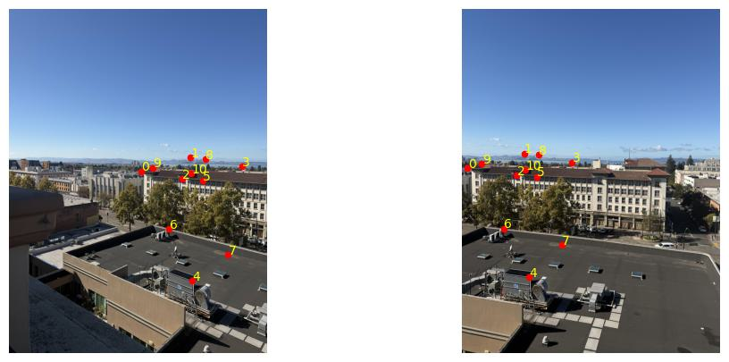
Correspondences
System of equations (A and b):
$$
\underbrace{\begin{bmatrix}
2191 & 2695 & 1 & 0 & 0 & 0 & -199381 & -245245 \\
0 & 0 & 0 & 2191 & 2695 & 1 & -5784240 & -7114800 \\
3015 & 2465 & 1 & 0 & 0 & 0 & -3099420 & -2534020 \\
0 & 0 & 0 & 3015 & 2465 & 1 & -7232985 & -5913535 \\
2879 & 2818 & 1 & 0 & 0 & 0 & -2602616 & -2547472 \\
0 & 0 & 0 & 2879 & 2818 & 1 & -7954677 & -7786134 \\
3872 & 2609 & 1 & 0 & 0 & 0 & -7054784 & -4753598 \\
0 & 0 & 0 & 3872 & 2609 & 1 & -9865856 & -6647732 \\
3038 & 4510 & 1 & 0 & 0 & 0 & -3375218 & -5010610 \\
0 & 0 & 0 & 3038 & 4510 & 1 & -13516062 & -20064990 \\
3213 & 2849 & 1 & 0 & 0 & 0 & -3990546 & -3538458 \\
0 & 0 & 0 & 3213 & 2849 & 1 & -8951418 & -7937314 \\
2659 & 3648 & 1 & 0 & 0 & 0 & -1829392 & -2509824 \\
0 & 0 & 0 & 2659 & 3648 & 1 & -9692055 & -13296960 \\
3635 & 4078 & 1 & 0 & 0 & 0 & -6023195 & -6757246 \\
0 & 0 & 0 & 3635 & 4078 & 1 & -14252835 & -15989838 \\
3258 & 2491 & 1 & 0 & 0 & 0 & -4144176 & -3168552 \\
0 & 0 & 0 & 3258 & 2491 & 1 & -7884360 & -6028220 \\
2383 & 2636 & 1 & 0 & 0 & 0 & -779241 & -861972 \\
0 & 0 & 0 & 2383 & 2636 & 1 & -6119544 & -6769248 \\
3021 & 2734 & 1 & 0 & 0 & 0 & -3166008 & -2865232 \\
0 & 0 & 0 & 3021 & 2734 & 1 & -8072112 & -7305248
\end{bmatrix}}_{A}
\underbrace{\begin{bmatrix} h_1 \\ h_2 \\ h_3 \\ h_4 \\ h_5 \\ h_6 \\ h_7 \\ h_8 \end{bmatrix}}_{\mathbf{h}}
=
\underbrace{\begin{bmatrix}
91 \\
2640 \\
1028 \\
2399 \\
904 \\
2763 \\
1822 \\
2548 \\
1111 \\
4449 \\
1242 \\
2786 \\
688 \\
3645 \\
1657 \\
3921 \\
1272 \\
2420 \\
327 \\
2568 \\
1048 \\
2672
\end{bmatrix}}_{\mathbf{b}}
$$
Recovered H:
$$
H =
\begin{bmatrix}
2.006 & 0.06964 & -4441.54 \\
0.5842 & 1.815 & -2101.05 \\
2.264 \times 10^{-4} & 1.728 \times 10^{-5} & 1
\end{bmatrix}
$$
Sodoi
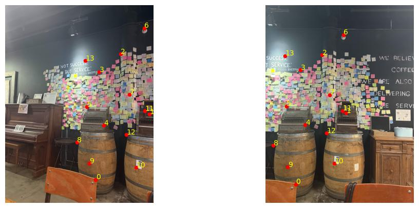
Correspondences
System of equations (A and b):
$$
\underbrace{\begin{bmatrix}
2616 & 5038 & 1 & 0 & 0 & 0 & -2265456 & -4362908 \\
0 & 0 & 0 & 2616 & 5038 & 1 & -13529952 & -26056536 \\
4172 & 3144 & 1 & 0 & 0 & 0 & -9724932 & -7328664 \\
0 & 0 & 0 & 4172 & 3144 & 1 & -12995780 & -9793560 \\
3334 & 1416 & 1 & 0 & 0 & 0 & -5434420 & -2308080 \\
0 & 0 & 0 & 3334 & 1416 & 1 & -4817630 & -2046120 \\
2721 & 1934 & 1 & 0 & 0 & 0 & -2748210 & -1953340 \\
0 & 0 & 0 & 2721 & 1934 & 1 & -5082828 & -3612712 \\
2853 & 3476 & 1 & 0 & 0 & 0 & -3266685 & -3980020 \\
0 & 0 & 0 & 2853 & 3476 & 1 & -9879939 & -12037388 \\
2365 & 2938 & 1 & 0 & 0 & 0 & -1414270 & -1756924 \\
0 & 0 & 0 & 2365 & 2938 & 1 & -6901070 & -8573084 \\
4020 & 661 & 1 & 0 & 0 & 0 & -9040980 & -1486589 \\
0 & 0 & 0 & 4020 & 661 & 1 & -3429060 & -563833 \\
3594 & 2579 & 1 & 0 & 0 & 0 & -6670464 & -4786624 \\
0 & 0 & 0 & 3594 & 2579 & 1 & -9312054 & -6682189 \\
2072 & 3965 & 1 & 0 & 0 & 0 & -464128 & -888160 \\
0 & 0 & 0 & 2072 & 3965 & 1 & -8401960 & -16078075 \\
2432 & 4576 & 1 & 0 & 0 & 0 & -1554048 & -2924064 \\
0 & 0 & 0 & 2432 & 4576 & 1 & -11367168 & -21388224 \\
3782 & 4692 & 1 & 0 & 0 & 0 & -7518616 & -9327696 \\
0 & 0 & 0 & 3782 & 4692 & 1 & -17283740 & -21442440 \\
4030 & 3059 & 1 & 0 & 0 & 0 & -8930480 & -6778744 \\
0 & 0 & 0 & 4030 & 3059 & 1 & -12303590 & -9339127 \\
3507 & 3736 & 1 & 0 & 0 & 0 & -6168813 & -6571624 \\
0 & 0 & 0 & 3507 & 3736 & 1 & -12947844 & -13793312 \\
2316 & 1601 & 1 & 0 & 0 & 0 & -1303908 & -901363 \\
0 & 0 & 0 & 2316 & 1601 & 1 & -3390624 & -2343864
\end{bmatrix}}_{A}
\underbrace{\begin{bmatrix} h_1 \\ h_2 \\ h_3 \\ h_4 \\ h_5 \\ h_6 \\ h_7 \\ h_8 \end{bmatrix}}_{\mathbf{h}}
=
\underbrace{\begin{bmatrix}
866 \\
5172 \\
2331 \\
3115 \\
1630 \\
1445 \\
1010 \\
1868 \\
1145 \\
3463 \\
598 \\
2918 \\
2249 \\
853 \\
1856 \\
2591 \\
224 \\
4055 \\
639 \\
4674 \\
1988 \\
4570 \\
2216 \\
3053 \\
1759 \\
3692 \\
563 \\
1464
\end{bmatrix}}_{\mathbf{b}}
$$
Recovered H:
$$
H =
\begin{bmatrix}
1.652 & -0.02647 & -3018.21 \\
0.4609 & 1.453 & -1431.29 \\
1.521 \times 10^{-4} & -3.822 \times 10^{-6} & 1
\end{bmatrix}
$$
Library
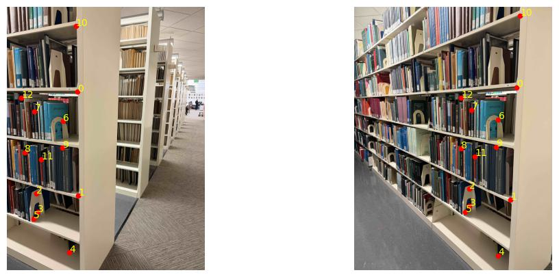
Correspondences
System of equations (A and b):
$$
\underbrace{\begin{bmatrix}
3508 & 1745 & 1 & 0 & 0 & 0 & -5335668 & -2654145 \\
0 & 0 & 0 & 3508 & 1745 & 1 & -6475768 & -3221270 \\
3385 & 4182 & 1 & 0 & 0 & 0 & -5212900 & -6440280 \\
0 & 0 & 0 & 3385 & 4182 & 1 & -13858190 & -17121108 \\
2485 & 3949 & 1 & 0 & 0 & 0 & -1580460 & -2511564 \\
0 & 0 & 0 & 2485 & 3949 & 1 & -10071705 & -16005297 \\
2495 & 4315 & 1 & 0 & 0 & 0 & -1656680 & -2865160 \\
0 & 0 & 0 & 2495 & 4315 & 1 & -11115225 & -19223325 \\
3113 & 5393 & 1 & 0 & 0 & 0 & -4211889 & -7296729 \\
0 & 0 & 0 & 3113 & 5393 & 1 & -16576725 & -28717725 \\
2406 & 4455 & 1 & 0 & 0 & 0 & -1373826 & -2543805 \\
0 & 0 & 0 & 2406 & 4455 & 1 & -11048352 & -20457360 \\
3114 & 2443 & 1 & 0 & 0 & 0 & -3774168 & -2960916 \\
0 & 0 & 0 & 3114 & 2443 & 1 & -7722720 & -6058640 \\
2539 & 2235 & 1 & 0 & 0 & 0 & -1510705 & -1329825 \\
0 & 0 & 0 & 2539 & 2235 & 1 & -5750835 & -5062275 \\
2309 & 3070 & 1 & 0 & 0 & 0 & -886656 & -1178880 \\
0 & 0 & 0 & 2309 & 3070 & 1 & -7284895 & -9685850 \\
3066 & 3036 & 1 & 0 & 0 & 0 & -3670002 & -3634092 \\
0 & 0 & 0 & 3066 & 3036 & 1 & -9369696 & -9278016 \\
3580 & 198 & 1 & 0 & 0 & 0 & -5341360 & -295416 \\
0 & 0 & 0 & 3580 & 198 & 1 & -1485700 & -82170 \\
2606 & 3243 & 1 & 0 & 0 & 0 & -1920622 & -2390091 \\
0 & 0 & 0 & 2606 & 3243 & 1 & -8615436 & -10721358 \\
2309 & 1975 & 1 & 0 & 0 & 0 & -715790 & -612250 \\
0 & 0 & 0 & 2309 & 1975 & 1 & -4571820 & -3910500
\end{bmatrix}}_{A}
\underbrace{\begin{bmatrix} h_1 \\ h_2 \\ h_3 \\ h_4 \\ h_5 \\ h_6 \\ h_7 \\ h_8 \end{bmatrix}}_{\mathbf{h}}
=
\underbrace{\begin{bmatrix}
1521 \\
1846 \\
1540 \\
4094 \\
636 \\
4053 \\
664 \\
4455 \\
1353 \\
5325 \\
571 \\
4592 \\
1212 \\
2480 \\
595 \\
2265 \\
384 \\
3155 \\
1197 \\
3056 \\
1492 \\
415 \\
737 \\
3306 \\
310 \\
1980
\end{bmatrix}}_{\mathbf{b}}
$$
Recovered H:
$$
H =
\begin{bmatrix}
1.794 & 0.09169 & -3862.26 \\
0.4897 & 1.576 & -1344.26 \\
1.994 \times 10^{-4} & 1.966 \times 10^{-6} & 1
\end{bmatrix}
$$
A.3: Warp the Images
I implemented warpImageNearestNeighbor(im, H) and warpImageBilinear(im, H)
using inverse warping. Forward warping/mapping (placing each input pixel through H) leaves gaps because the pixels will land at a fractional point
and spread apart. Therefore I did inverse mapping, which places every pixel in the output through
pixels land at fractional positions and spread apart. Instead, for every pixel in the output, it send it backwards through H⁻¹ to find where it came
from in the original image. So every output pixel will get a value.
Both functions follow the same steps:
- Output size: The 4 corners of the input image are transformed using H. Since a homography
keeps straight lines straight, the smallest bounding box containing the transformed corners
determines the output size.
- Inverse mapping: For every pixel in the output image, H⁻¹ is applied and the result
is divided by w to find the corresponding source location in the original image.
- Interpolation: The pixel color at the source location is calculated using one of
the two interpolation methods described below.
- Empty pixels: If the source location falls outside the original image, the output
pixel is left black.
Each integer coordinate represents the center of a pixel, so (0, 0) corresponds to the center
of the first pixel.
- Nearest neighbor: The source location is rounded to the nearest pixel, and its color
is copied to the output image.
- Bilinear: The 4 pixels surrounding the source location are used to calculate the
output color. With dx and dy representing the fractional distances from the top-left pixel,
the top two pixels are blended using dx, followed by the bottom two pixels. These two
results are then blended using dy, giving closer pixels more weight.
Rectification
To test the warping, I rectified photos of rectangular objects taken at an angle. Since there's
only one image, I clicked the 4 corners of the object as im1_pts, and defined im2_pts by hand as a rectangle with
the object's estimated proportions. Computing H from these and warping changes the object as if seen straight and not from the side.
Calendar poster
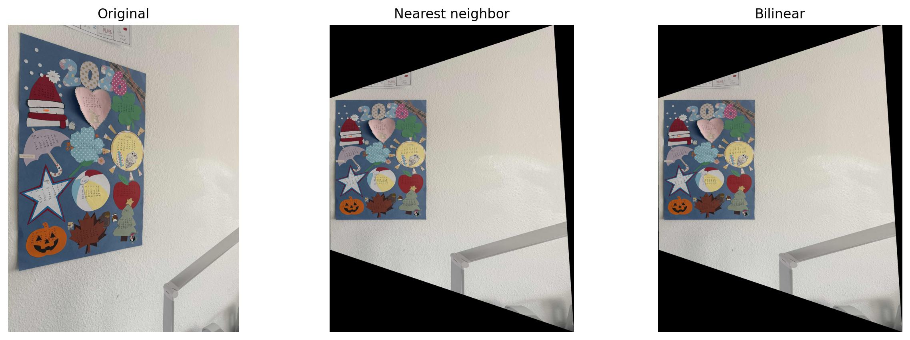
Original, nearest neighbor, and bilinear
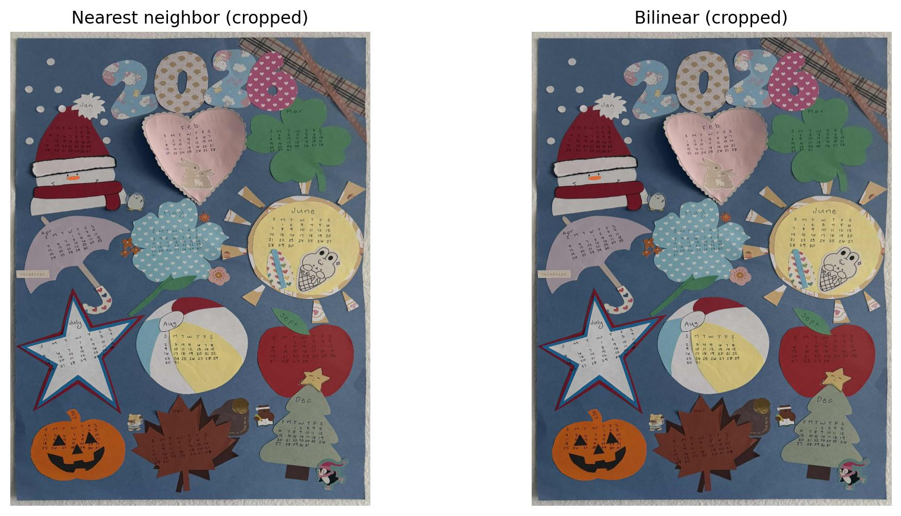
Cropped to the calendar: nearest neighbor and bilinear
Gateway sign
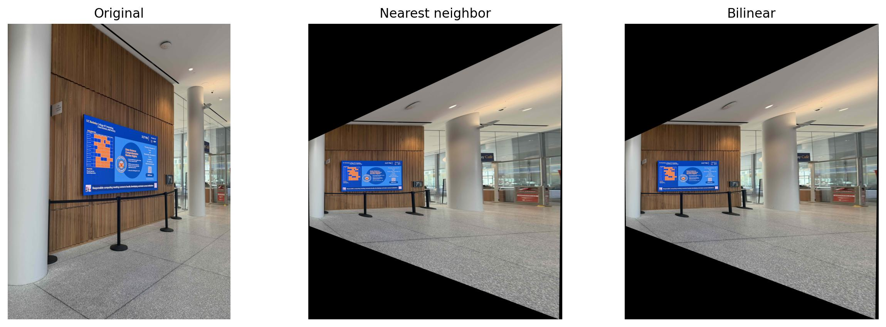
Original, nearest neighbor, and bilinear
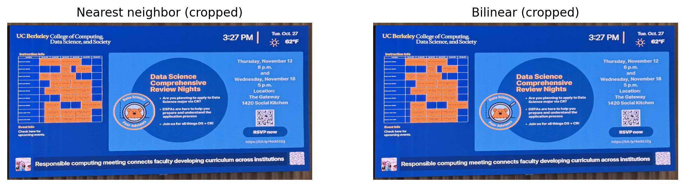
Cropped to the sign: nearest neighbor and bilinear
Framed picture
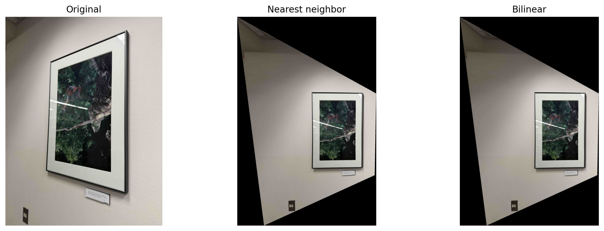
Original, nearest neighbor, and bilinear
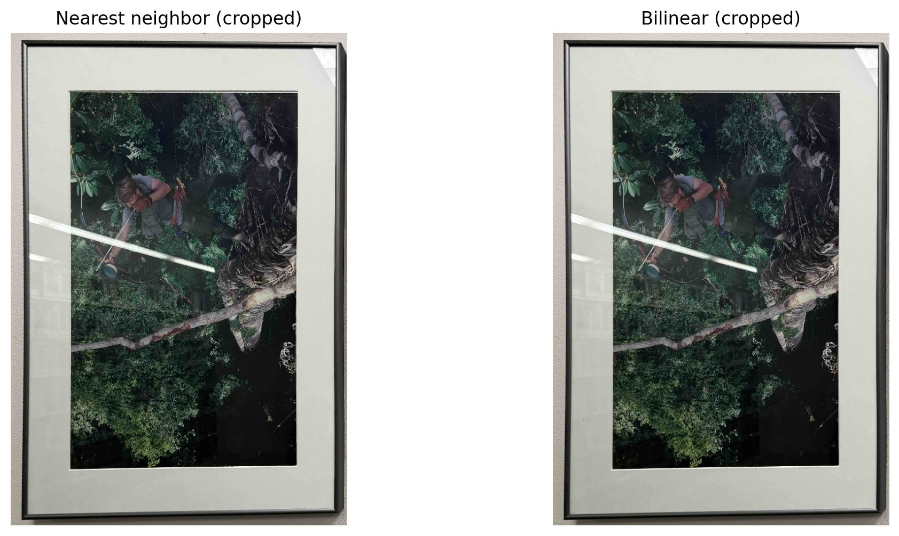
Cropped to the frame: nearest neighbor and bilinear
Parking sign
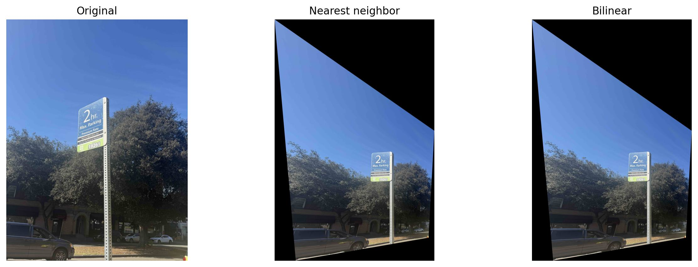
Original, nearest neighbor, and bilinear
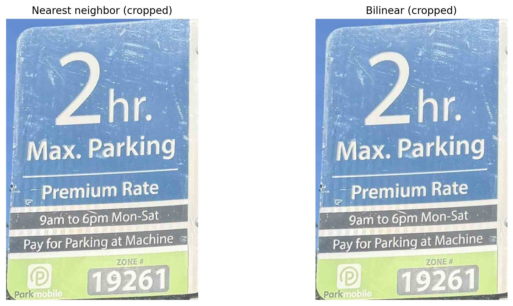
Cropped to the sign: nearest neighbor and bilinear
Zoomed-in comparison
Nearest neighbor (zoomed)
The same small patch of the parking sign, enlarged 6 times.
Neighbor vs Bilinear
Nearest neighbor is faster, since it reads one pixel per output pixel. Bilinear reads four and
does the blending math, so it takes longer. However, bilinear gives a smoother result compared to nearest neighbor, which produces a more jagged
result, especially around text and anything with straight lines. Bilinear makes it more blurry due to the smoothing.